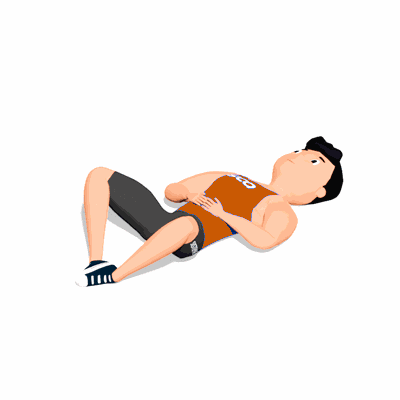

Frog Bridge

O exercício trabalha fortalecimento e ativação dos glúteos, auxiliando na estabilização pélvica.
Ficha Técnica
Tipo: Funcional
Grupo Muscular: Glúteo
Aparelho: Nenhum
Músculos: Nenhum
Como realizar
- Deitado, com a barriga voltada para cima;
- Você deve flexionar os joelhos e o quadril, de modo que consiga manter contato das plantas dos pés;
- Os braços deverão estar ao lado do tronco com a palma da mão voltada para o solo;
- Você deverá elevar o seu quadril o mais alto possível, contraindo os glúteos e retornar de maneira controlada.
 RC STORE
RC STORE